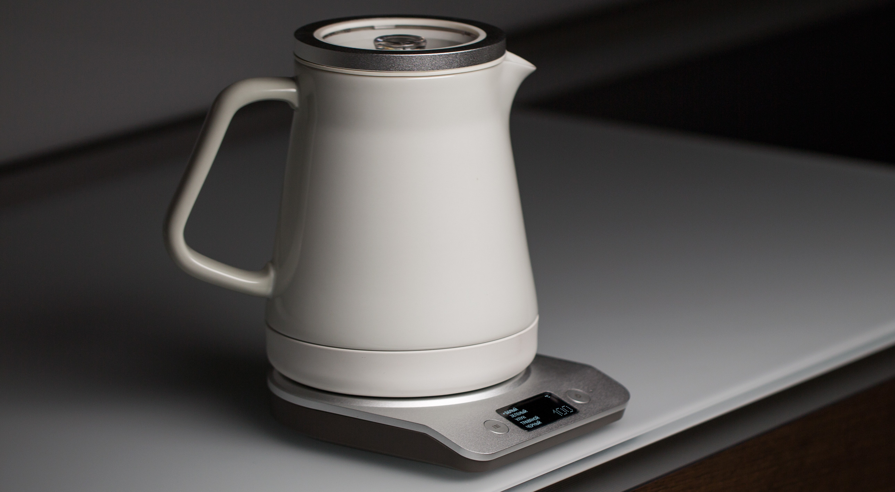
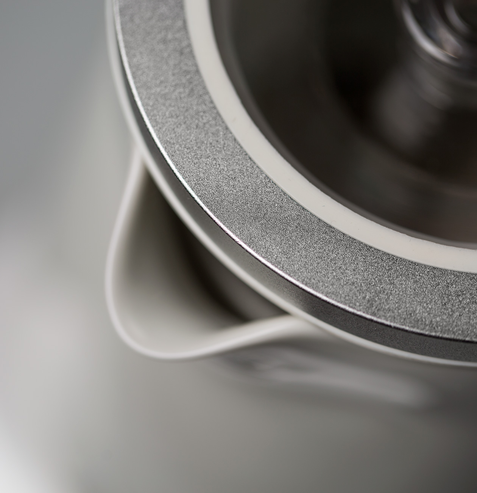
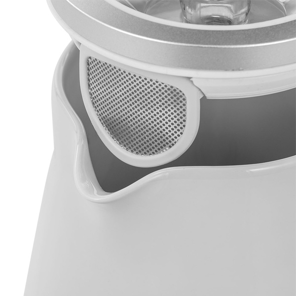
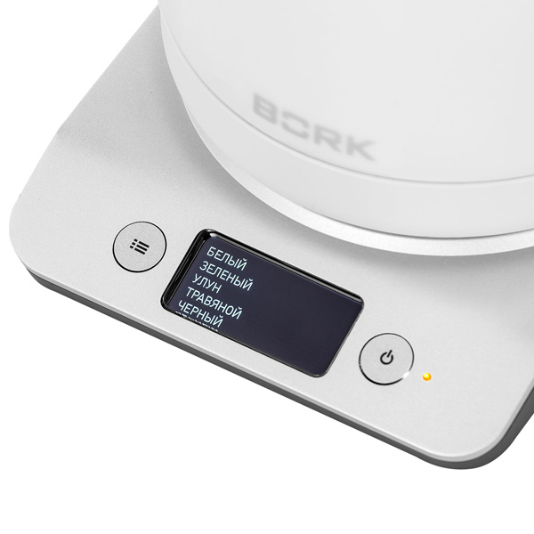
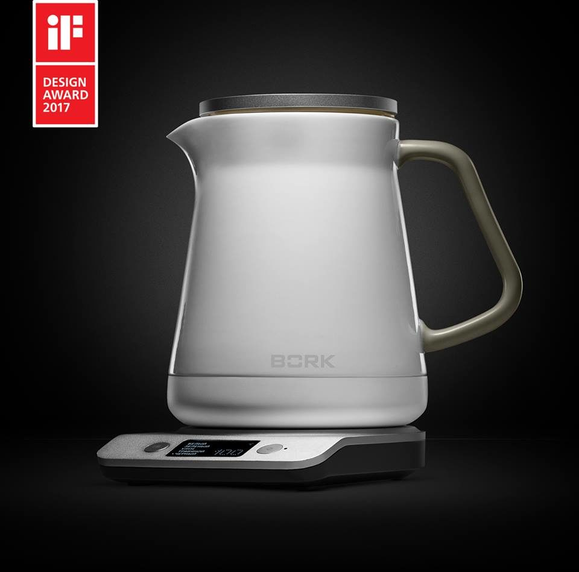

Чайник K781
Керамический чайник
- 5 температурных режимов для разных видов чая
- Информативный LCD-Дисплей
- Функция предварительного кипячения
Совершенство в деталях
 Каждая деталь в наших чайниках изготовлена и материалов высочайшего качества.
Предварительное кипячение
Мы разработали специальную функцию, которая позволяет вам сначала вскипятить воду, а затем проконтролировать достижение правильной температуры для заваривания идеального зеленого или белого чая.
5 температурных режимов
BORK K781 имеет пять предустановленных температурных режимов, которые учитывают при заваривании сорт чая, степень его ферментации и особенности измельчения чайного листа. Данные параметры позволяют по-настоящему раскрыть аромат чайного листа и получить идеальный вкус напитка.
- Белый 65°С
- Зеленый 75°С
- Улун 85°С
- Травяной 95°С
- Черный 100°С
Функция Boil First
Эта функция позволяет сначала вскипятить воду, а затем получить нужную температуру в зависимости от выбранного сорта чая.
Изысканный стиль
Керамический корпус не только отлично сохраняет тепло, но и превращает чайник в изящное дополнение интерьера. Стильная модель уже завоевала международную премию IF Design Award 2017.
Технические характеристики
Напряжение: 220–240 В
Частота: 50/60 Гц
Мощность: 1280–1520 Вт
Объем: 1,2 л
Вес: 1,9 кг
Страна-производитель: Китай